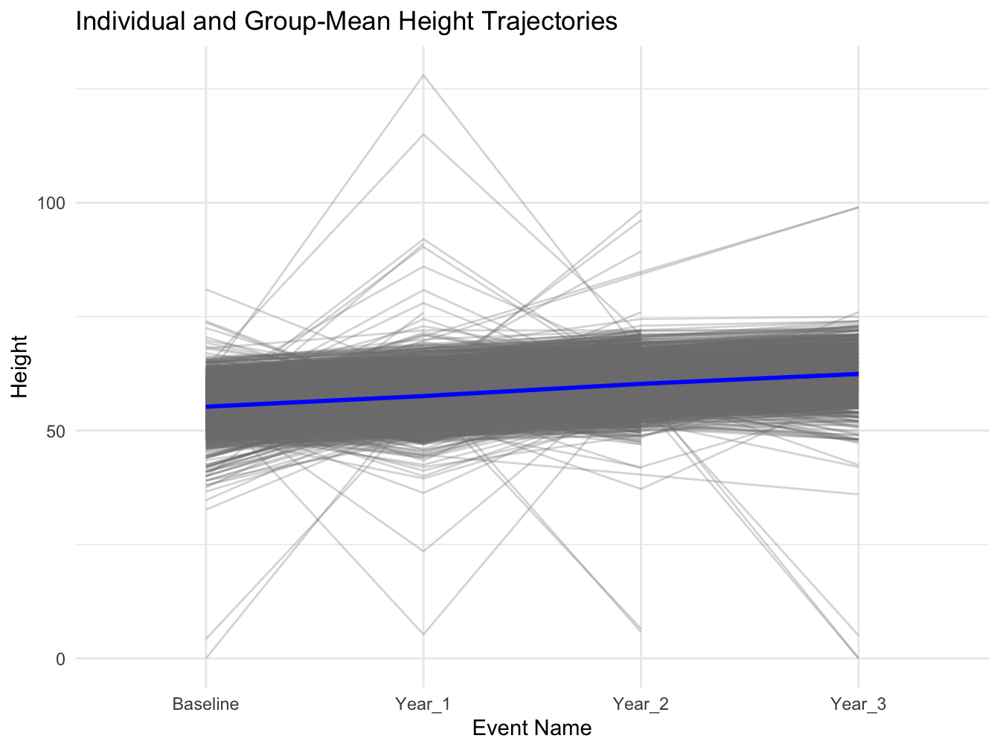

library(tidyverse) # Collection of R packages for data science
library(gtsummary) # Publication-ready tables
library(rstatix) # Statistical Tests in tidy format
library(lme4) # Linear mixed-effects modelsLinear Mixed Models: Random Intercept
Overview
The LMM:ri is similar to traditional (fixed-effect) linear regression extending on this approach by including a subject-specific random-effect that allows each participant to have their own unique intercept value, in addition to the overall mean-level (fixed-effect) intercept value zzzzt
In this example, we will use the LMM:ri to analyze trajectories of height obtained across multiple measurement occasions in a sample of youth taking part in the ABCD Study. Our primary aim is to characterize stability and change in height assessments, while accounting for observations that are clustered within youth over time. To do so, we will use the LMM:ri to simultaneously model an overall sample mean trajectory (fixed effect) and subject-specific (random) effects that vary randomly about the sample mean trajectory.
Preliminary Setup
Load Packages
This code loads the r libraries necessary for this example
Descriptives
descriptives_table <- df_long %>%
select(event, handedness, height) %>%
mutate(event = factor(event)) %>%
mutate(handedness = factor(handedness)) %>%
tbl_summary(
by = event,
missing = "no",
label = list(handedness ~ "Handedness", height ~ "Height"),
statistic = list(all_continuous() ~ "{mean} ({sd}) )", all_categorical() ~ "{p}%"),
) %>%
modify_header(all_stat_cols() ~ "**{level}**<br>N = {n}") %>%
bold_labels() %>%
italicize_levels() %>%
modify_spanning_header(all_stat_cols() ~ "**Assessment Wave**")
theme_gtsummary_compact()
descriptives_table| Characteristic | Assessment Wave | |
|---|---|---|
| Baseline N = 102631 |
Year_1 N = 96291 |
|
| Handedness | ||
| Right | 92% | 92% |
| Left | 8.3% | 8.3% |
| Height | 55.2 (3.3) ) | 57.6 (3.6) ) |
| 1 %; Mean (SD) ) | ||
Results
Compute LMM Model with Random Intercepts
The code fits a linear mixed model to predict the ‘Height’ variable based on time points (‘eventname’) and handedness (‘Handedness’), while accounting for individual-level variability by including random intercepts for each participant (‘src_subject_id’). The results of the model are then printed to provide a summary of the fitted model parameters.
model <- lmer(height ~ 1 + event + handedness + (1 | id), data = df_long, REML = T)
## Output and reports extending from the LMM-ri analyses
summary(model)Linear mixed model fit by REML ['lmerMod']
Formula: height ~ 1 + event + handedness + (1 | id)
Data: df_long
REML criterion at convergence: 150068
Scaled residuals:
Min 1Q Median 3Q Max
-24.729 -0.293 -0.003 0.297 24.289
Random effects:
Groups Name Variance Std.Dev.
id (Intercept) 9.17 3.03
Residual 3.59 1.90
Number of obs: 31113, groups: id, 10263
Fixed effects:
Estimate Std. Error t value
(Intercept) 55.2235 0.0365 1511.15
eventYear_1 2.3536 0.0272 86.68
eventYear_2 5.0370 0.0291 173.23
eventYear_3 7.2217 0.0412 175.45
handednessLeft 0.1547 0.1159 1.33
Correlation of Fixed Effects:
(Intr) evnY_1 evnY_2 evnY_3
eventYear_1 -0.353
eventYear_2 -0.330 0.457
eventYear_3 -0.233 0.323 0.294
handdnssLft -0.262 0.000 0.001 -0.001confint(model, level = 0.95, method = "Wald") 2.5 % 97.5 %
.sig01 NA NA
.sigma NA NA
(Intercept) 55.1518 55.295
eventYear_1 2.3004 2.407
eventYear_2 4.9800 5.094
eventYear_3 7.1410 7.302
handednessLeft -0.0725 0.382The code provided executes a linear mixed model (LMM) to predict children’s height across different time points (Baseline, Year_1, Year_2, Year_3, and Year_4), and also takes into account their handedness. This model accounts for individual variability in height by including a random intercept for each subject (id). The output indicates that the model was fit using the REML (Restricted Maximum Likelihood) criterion.
Model Plots
# Extract the data frame used in the model
model_data <- model@frame
# Extract unique subject IDs from the model's data
original_subject_ids <- unique(model_data$src_subject_id)
# Subset the original data to include only those subjects
df_subset <- df %>% filter(src_subject_id %in% original_subject_ids)
eventname_map <- c(
"Baseline" = "Baseline",
"Year_1" = "Year_1",
"Year_2" = "Year_2",
"Year_3" = "Year_3",
"Year_4" = "Year_4"
)
# Apply the recoding to the eventname variable
df_subset$eventname <- factor(df_subset$eventname, levels = names(eventname_map), labels = eventname_map)
# Verify the recoding
table(df_subset$eventname)
Baseline Year_1 Year_2 Year_3 Year_4
0 0 0 0 0 # Generate the plot
ggplot(df_long, aes(x = event, y = height, group = id)) +
# Individual estimated height trajectories in faded lines
geom_line(aes(group = id), alpha = 0.3, color = "grey50") +
# Overall group-mean trajectory in blue with increased thickness
stat_summary(aes(group = 1), fun = mean, geom = "line", color = "blue", linewidth = 1) +
labs(
title = "Individual and Group-Mean Height Trajectories",
x = "Event Name",
y = "Height"
) +
theme_minimal()
Wrapping Up
The estimate of the random intercept was xxxx (SE xxxx). The fixed effects section provides the coefficients for the intercept, eventname, and the sex variable. The linear mixed model analysis was conducted to predict children’s height across different time points (Baseline, Year_1, Year_2, Year_3, and Year_4) using the event name (eventname) and height (Height) variables. The intercept, corresponding to the reference levels of the predictors is estimated at xxxxx units, and this effect is highly significant. Regarding handedness, right-handedxxxx show an increase in height of about xxx (SE xxxxxx) units compared to xxxx.